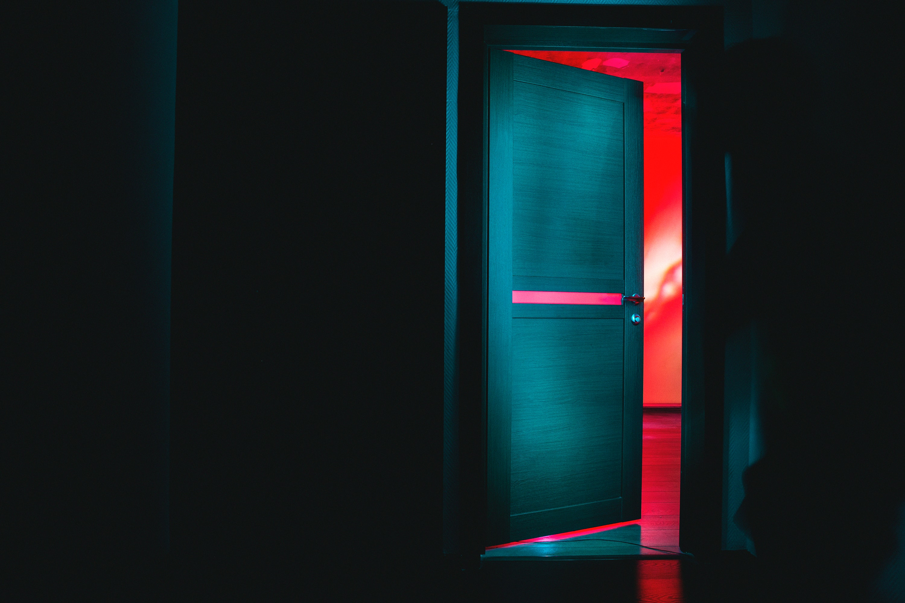

Invasion of Privacy

Invasion by the internet into our personal lives has become the new normal. Accepting T&C blindly but reading about hundreds of captions a day is our new reality. You may be thinking that captions are at least interesting, so I have a question for you in that case? Is your own privacy not of interest to you? I have some self-reflection to do myself in that case. But are we to blame for blind acceptance of T&C or are they for designing it in a way that it is lengthy, confusing and hard to read because of its small font? I believe T&Cs are not designed to inform us, they’re designed to keep us from being informed and make it seem like our fault entirely. However, internet and its mediums are for service to users, and therefore algorithm designers have an ethical responsibility towards their users. Although I could have used the example of Facebook or Amazon, I have not since I believe that even the new and emerging mediums cannot be entirely trusted as some of them are similar in many ways: lengthy T&Cs and showing customized ads.
| March 25, 2021 |
AI and Us

What are we without AI? Bored and Tired. The washing machine and phone have become our best friends. And to part with them would not be easy. But the upcoming development of AI seems almost life-threatening. It is scary. It is scary because we’re afraid they may become more powerful than us. They may do with us what we’re doing with the nature. They may betray us like we’re betraying the earth. But what is scary is that AI isnt ‘it’ anymore. I called it ‘they’ twice in the last paragraph as though referring to people, and you did not object. That’s how advanced AI has become in duplicating the role and character of a human as Siri, Alexa and more. So, instead of introducing you to a fascinating app or website or a technology that imitates human characteristics, I want to introduce you to an app called My Heritage Deep Nostalgia that does what would be otherwise impossible for all of us to do. It converts a still image into a live photo by adding realistic movement into a person’s face.
| March 23, 2021 |
Framing and Perspective
Storytelling is an art. It is the ability to convince someone that your story is worth their time. It is too much pressure, don’t you think? Well, it is either that or personal gain that makes people bend the truth or speak half of it. And that my friends is called Framing – strategic narration of a story. And to capture the essence of the power of Framing, I photoshopped a running woman with different backgrounds. While the original image simply shows a girl in motion, I want you to think about how by the act of manipulating the frame and its contents, you form a mental note about who she may be, why she is running, what she wants etc.
| March 16, 2021 |
Propaganda
It is an inaccurate, exaggerated or incomplete presentation of truth to promote a certain agenda(s) of a person or a group. It is especially enabled now because of the emergence of various internet trends such as memes. Propagandas thrive under the mask of memes since memes are popularly shared and almost never taken any offense to. I for one could never think of a meme more than a silly, funny picture. But recently, I realised the extent of my dependence on memes to discover latest news and trends. Therefore, they were involved in shaping my narrative of the real world and its stories. I tried to replicate my realization in the form of a meme.
| March 1, 2021 |
Glitch Art
It is a visual art that creates the illusion of a disrupted screen or network. And so, when I think of glitch, I remember my terrorized face and frantic attempts as a kid to fix the TV screen when it glitched mid-cartoon or mid-movie. It was my first encounter with a glitch, and here’s a cartoon-y demonstration of how I dealt with it in the form of a GIF. It was a struggle 2010s kids will never know. And it was just as disturbing to the eyes as was its audio.
| February 15, 2021 |